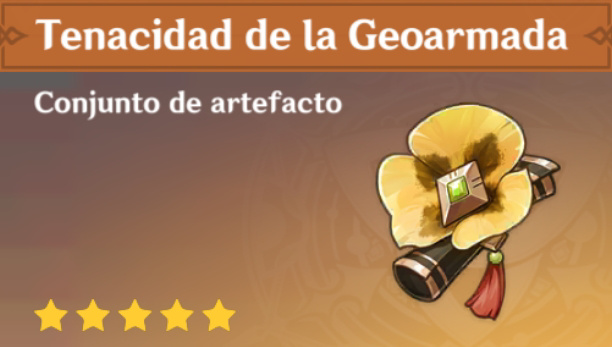

Dehya Build

Dehya es un personaje que recien salio en la nueva version de genshin impact (3.5) a pesar de todos los leaks que salieron sobre ella y los bajos escalados que tiene muchas personas han tirado por ella simplemente porque es Waifu(Me incluyo) por lo tanto en esta pagina vamos a ver que builds se le puede colocar a dehya y que equipos se pueden conformar con ella.
Emblema del destino(Daño enfocado en la definitiva)

Uno de los sets que se esta usando con dehya seria emblema del destino por los bonos que da al daño
definitivo.
Dependiendo la cantidad de recarga que el personaje tenga.
- Bonus de 2 piezas: 20% de recarga de energia
- Bonus de 4 piezas: Aumenta el daño infligido con la Habilidad Definitiva en una cantidad equivalente
al 25% de la Recarga de Energía. Se puede obtener un aumento del 75% como máximo.
Este es un set que esta enfocado en dar puñetazos puros y duros lo mas fuerte que dehya permita claro.
Ahora ¿que se deberia
buscar en cada parte del set? lo mostrare en la siguiente tabla:
| Casco | Flor | Pluma | Reloj | Caliz |
|---|---|---|---|---|
| Prob. Critica/Daño critico | Vida | Ataque plano | Vida% | Bono daño pyro |
Ahora los substats que se deben de buscar en cada parte serian:
| Casco | Flor | Pluma | Reloj | Caliz |
|---|---|---|---|---|
| Daño critico Prob critica Recarga de energia |
Daño critico Prob critica Recarga de energia |
Daño critico Prob critica Recarga de energia |
Daño critico prob critica Recarga de energia |
Daño critico prob critica Recarga de energia |
Recomiendo tener por lo menos 200% de recarga de energia ya que con eso aumentariamos hasta un 50% el daño de la definitiva de dehya para pegar esos putiazos mas poderosos(aunque no sea asi).
Composiciones de equipo con emblema
Para este equipo de usara el monopyro compuesto por:


Con esta composicion se busca aumentar el daño que ocasiona dehya a todo sus habilidades con la definitiva de kazuha y la ulti de bennet. Cabe recalcar que si tienen a bennet a C6 aumentan el 15% de daño pyro dentro de su ulti, lo mismo con xianling si la tienen c1 ya que baja resistencia a pyro y si la tienen c6 aumenta el daño pyro al equipo en un 15% al lanzar su defitnitiva
Bruja carmesi(Reacciones)

El siguiente set que veremos sera el bruja carmesi a pesar de que no sea el mejor para ella ya que su ulti
no hace sinergia
con xinqiu ni con yelan por lo tanto no aprovecharia del todo su set de 4 partes con facilidad, pero si la
llevamos con mona
o con qiqi(Probado por mi) es posible vaporizar o derretir no todos los golpes de la ulti pero si unos 3 o 4
de ellos.
Esto es lo que nos ofrece el set de brujas carmesi:
- Bono de 2 piezas: Bono de Daño Pyro +15%.
- Bono de 4 piezas: Aumenta el daño causado por Sobrecarga, Quemadura y Crepitar en un 40%, y el de
Vaporización y Derretido en un 15%. El uso de una Habilidad Elemental aumenta los efectos del
conjunto de 2 piezas en un 50% durante 10 s. Puede acumularse hasta un máximo de 3 veces.
Dehya no aprovecha este set al 100% pero es usable hasta cierto punto claro esta. Ahora les enseñare que
buscar en cada parte del set.
Composiciones con Bruja
A pesar de que dehya no pueda tener sinergia con yelan o xinqiu aun es capaz de vaporizar o hacer derretidos
dejare los dos equipos uno que se usa con normalidad y otro menos popular.
Con esta composicion es posible vaporizar y no solo eso tambien nos aumenta el daño por la definitiva de
mona por lo tanto se llegaria a un daño bastante alto:

Una composicion que tambien se puede llevar para ocasionar derretidos seria con ayaka, es eficiente y claramente si tienes a ayaka es una buena opcion ya que desde que vino dendro permafrost quedo apartado un poco:

| Casco | Flor | Pluma | Reloj | Caliz |
|---|---|---|---|---|
| Prob. Critica/Daño critico | Vida plana | Ataque plano | Vida%/Maestria elemental | Bono daño pyro |
Las substats serian las mismas que en el primer set pero de igual forma las colocare para que se puedan guiar.
| Casco | Flor | Pluma | Reloj | Caliz |
|---|---|---|---|---|
| Daño critico Prob critica Recarga de energia |
Daño critico Prob critica Recarga de energia |
Daño critico Prob critica Recarga de energia |
Daño critico prob critica Recarga de energia |
Daño critico prob critica Recarga de energia |
Set carmesi y 2 de vida

Un set que aprovecha el escalado de habilidades que tiene dehya en su kit que seria ataque/vida aunque no mucha gente usa este set. Estos son los buffs que da cada parte
- Geoarmada 2 piezas: 20% de vida
- Bruja carmesi 2 piezas: Bono de Daño Pyro +15%
En este set se buscaria lo mismo que en los anteriores tanto en stats principal como en substats. Dejo la tabla abajo
| Casco | Flor | Pluma | Reloj | Caliz |
|---|---|---|---|---|
| Prob. Critica/Daño critico | Vida plana | Ataque plano | Vida%/Maestria elemental | Bono daño pyro |
| Casco | Flor | Pluma | Reloj | Caliz |
|---|---|---|---|---|
| Daño critico Prob critica Recarga de energia |
Daño critico Prob critica Recarga de energia |
Daño critico Prob critica Recarga de energia |
Daño critico prob critica Recarga de energia |
Daño critico prob critica Recarga de energia |
Armas para dehya
Algo que me gustaria agregar para finalizar en la proxima actualizacion en la 3.6 se viene un dominio de artefactos nuevo que le servira a dehya con el cual podria sacar no todo su potencial pero por lo menos mejoraria un 50% mas de lo que esta actualmente